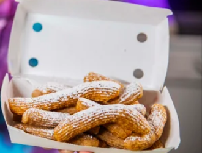

Funnel Cake Fries

Description
These funnel cake fries are definitely worth making for a group of friends (or just yourself, no one is judging)
Ingredients
- 2 eggs
- 1 tbsp water
- 1/4 cup sugar
- 1/2 cup milk
- 2 tsp vanilla extract
- 2 cups flour
- 1 tsp baking powder
- 1/2 tsp salt
- 1/4 tsp cinnamon
- 3-4 cups canola or vegatable oil, (For frying)
- powdered sugar, (For topping)
Preparation
-
Combine eggs, water, sugar, milk and vanilla into a mixing bowl and beat with hand mixer until frothy. Mix flour, baking powder, salt & cinnamon in a separate bowl and then gradually add the dry ingredients to the wet ingredients until a thick batter forms.
-
Fill a piping bag with the batter and set aside, then add oil to a large pot and heat to 390 degrees F. You can use a candy thermometer to measure the temperature.
-
Once the oil is up to temperature, carefully pipe a few lines of batter into the hot oil, using scissors to break the batter off. Fry about 45-60 seconds until golden brown on both sides.
-
Remove the fries from the oil with a spider strainer, slotted spoon or tongs. Let the excess oil drip off and then place on a paper towel to catch the remaining excess oil.
-
Dust with powdered sugar and serve immediately